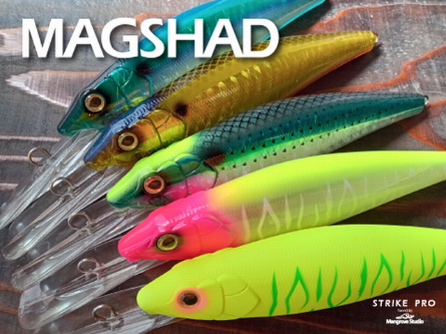
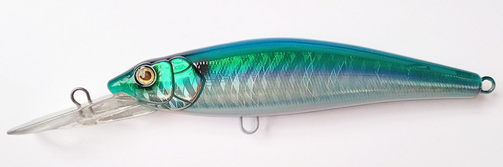
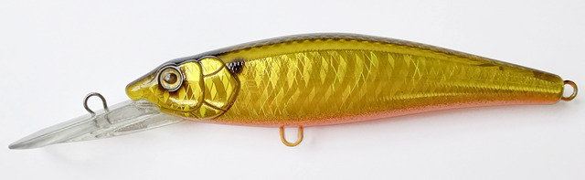
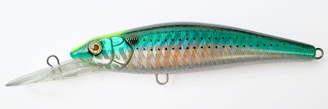
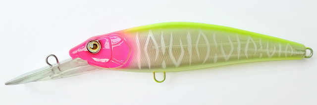
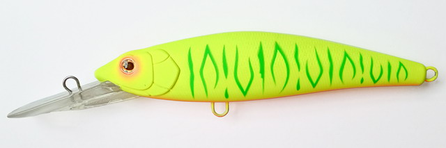
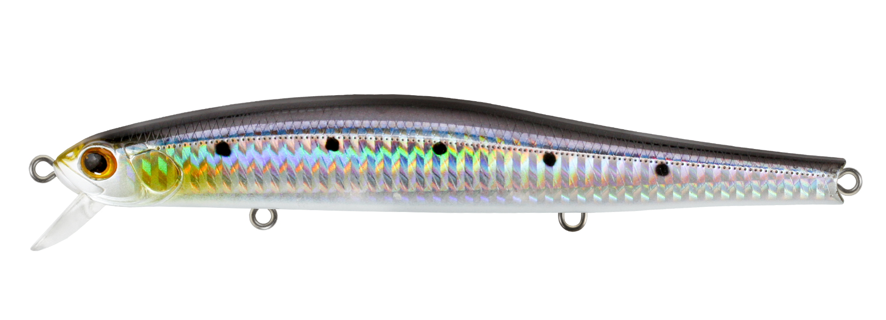

マグシャッド180
（MAGSHAD 180）
マグシャッド180（MAGSHAD 180）はマングローブスタジオ（Mangrove Studio）が手がけるストライクプロ（STRIKE PRO）のビッグベイトで、大型のディープシャッドです。
180mm・89gと大型ながら驚くほど引き抵抗が軽く、潜行深度は約4m。表層や水面直下が中心だったビッグベイトのシーバスゲームに、「深いレンジを巻いて探る」という新しい選択肢を加えてくれる1本です。

画像出典:シーバスルアー専門店 キングフィッシャー
スペック
- メーカー
- マングローブスタジオ（Mangrove Studio）
- ブランド
- ストライクプロ（STRIKE PRO）
- タイプ
- ディープシャッド（ビッグベイト）
- 全長
- 180mm
- 自重
- 89g
- 潜行深度
- 約4m
- 推奨リング
- #5（ベリーに2個・テールに1個）
- 推奨フック
- BKK SPEAR21 2/0（リング・フック装着で総重量約96g）
- カラー
- 5色
- ターゲット
- シーバス
- 価格
- 3,718円（税込・販売店価格）
- 発売
- 2026年11月
▼今すぐチェック
マグシャッド180の特徴
日本のビッグベイトゲーム界に、新たなる"巻きの一手"。大型なのに軽い引き抵抗で、深いレンジを巻き続けられるディープシャッド
-
大型なのに引き抵抗が軽い
180mm・89gのビッグベイトながら、驚くほど引き抵抗が軽いのが特徴。長時間巻き続けても疲れにくいので、深いレンジを1日通して探る釣りでも使い続けられる。
-
潜行深度は約4m
ビッグベイトでは珍しい、約4mまで潜るディープシャッド。表層や水面直下まで出てこないシーバスのいるレンジに、大きなシルエットを直接届けられる。
-
安定した飛行姿勢で遠投できる
投げた時の飛行姿勢が安定していて遠投しやすく、沖のハンプやミオ筋まで広範囲を探れる。大型河川や漁港の広いエリアでも使いやすい。
マグシャッド180の使い方
基本はただ巻き。着水後に巻き始めると潜っていくので、一定の速さでゆっくり巻いて、潜らせたレンジをキープするのが基本です。
ロッドの先を下げて巻くと、より深いレンジまで潜らせやすくなります。ボトムや障害物の深さに合わせて巻き速度とロッドの角度を変え、シーバスの付いている層を探りましょう。
マグシャッド180の得意な状況
表層まで魚を出すことができないタフなコンディションが最大の出番。深場のオープンエリアや、足場の高い堤防・橋桁まわりでもレンジを下げて誘えます。
ロックエリアや岩盤のストレッチ、沖のハンプや障害物まわり、水深のある大型河川や漁港のミオ筋など、深さのある場所を広く探りたい時にも選びたい1本です。
ほかのビッグベイトでは届かない深いレンジのシーバスが釣れるのが、マグシャッド180ならではの強みです。
ワンポイント
表層の反応が良いタイミングはトップや水面直下のビッグベイトで、渋くなったらマグシャッド180で潜らせる、とレンジで使い分けると、ビッグベイトゲームの幅が広がります。
フックとリングは推奨のセッティング（#5リング＋BKK SPEAR21 2/0）が基準です。装着すると総重量は約96gになるので、タックルはそれを投げられる強さのものを選びましょう。
マグシャッド180に合わせたいおすすめタックル
マグシャッド180はリング・フックを付けると総重量が約96gになる大型ルアーです。投げ切れる強さのロッドと、深いレンジを巻き続けられるリールを組み合わせるのが基本になります。タックルの目安は次のとおりです。
| 項目 | 目安 | 選ぶポイント |
|---|---|---|
| ロッド | ルアー重量MAX100g以上のビッグベイト対応ロッド（9〜10ft前後） | リング・フック込みで約96gになるので、それをフルキャストできる強さが必要。 |
| リール | ベイト：200〜300番クラス／スピニング：4000〜5000番クラス | 深いレンジを巻き続けるので、巻き上げ力があるパワー寄りのギアが楽。 |
| ライン | PE2〜3号 | 大型ルアーを投げ続けても高切れしにくく、ランカーとのやり取りにも余裕がある太さ。 |
| リーダー | ナイロン・フロロ 40〜50lb | ロックエリアや橋桁など、擦れやすい場所を通すので太めにしておくと安心。 |
| スナップ | 大型魚対応の強度があるスナップ | ルアーが重いので、細軸のスナップは伸びやすい。強度表示を確認して選ぶ。 |
| リング・フック | #5リング（ベリー2個・テール1個）＋BKK SPEAR21 2/0 | 販売店が紹介している推奨セッティング。まずはこの組み合わせを基準に。 |
※ロッド・リール・ラインの目安は、一般的なビッグベイトのシーバスタックルをもとにしたtsuri-boonの目安です。お使いのロッドの適合ルアー重量を必ず確認してください。
推奨フック：BKK SPEAR21（2/0）
販売店が推奨しているトレブルフック。マグシャッド180のベリー・テールに付けて、総重量が約96gになる組み合わせです。

推奨リング：スプリットリング #5
ベリーに2個・テールに1個が推奨。大型のシーバスとのやり取りでも開きにくい、強度のあるリングを選びましょう。

人気カラー
マグシャッド180はナチュラル系からチャート系まで5色を展開。その中から人気カラーを紹介します。

ナチュラルブルーブルーバックのナチュラル系。澄み潮やイワシなど、青物系のベイトの時に。

ゴールデンギザーゴールドボディで光を強く返すカラー。濁り潮や日中のアピールに。

ぼらこのボラやコノシロなど大型ベイトをイメージしたカラー。秋の大型ベイトパターンに。

ゴーストピンクチャートピンクヘッドにチャートバックのゴースト系。濁りや朝夕のマズメに。

マットチャートマットなチャートにグリーンのタイガー柄。濁り潮や深いレンジで目立たせたい時に。
画像出典:シーバスルアー専門店 キングフィッシャー
▼今すぐチェック
マグシャッド180に似ているルアー
-
 タイドミノースリム178F
デュオ
詳細はこちら＞
タイドミノースリム178F
デュオ
詳細はこちら＞
178mmの大型フローティングミノー。同じ大きなシルエットで、もう少し浅いレンジを引きたい時に。
-
 ボルゾイSW160S
シマノ
詳細はこちら＞
ボルゾイSW160S
シマノ
詳細はこちら＞
160mmのビッグベイトミノー（シンキング）。沈めて中層を引きたい時や、もう少し小さなシルエットで見せたい時に。
-

ザブラシステムミノー15F ジップベイツ 詳細はこちら＞150mmの大型フローティングミノー。大型ベイトに付いたシーバスを、表層〜中層で狙いたい時に。